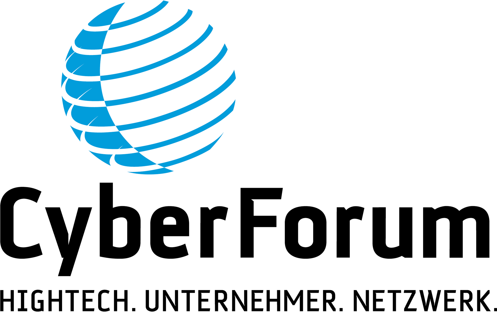

GROW wäre nicht GROW ohne unsere Partner
KNUDDELS.DE – DIE GRÖßTE ONLINE-CHAT COMMUNITY IN DEUTSCHLAND
Knuddels steht seit der Gründung 1999 für eine einzigartige, offene Gemeinschaft, in der man freundschaftlich miteinander umgeht und ein familiäres Klima pflegt.
Dabei kann man sich Knuddels als ein großes, gemütliches Café mit unterschiedlichen Ecken und Räumen vorstellen, die bei uns “Channel” heißen. Ob man neue Leute an der Bar kennenlernen möchte, Bekannte in der Lounge trifft oder eine Runde Billard spielt: Für alle Interessen gibt es ein Plätzchen.
Wer mit uns arbeitet stellt schnell fest, dass Knuddels mehr ist als nur ein Job. Knuddels ist das Brennen für herausragende Produkte, die Leidenschaft für die Liebe zum Detail, das gemeinsame Miteinander und viel gegenseitiges Feedback.
LEA Partners - Unterstützung für innovative Unternehmen
Als unternehmerischer Eigenkapitalpartner unterstützt LEA Partners visionäre Gründer und Management-Teams innovativer Unternehmen in unterschiedlichen Entwicklungsphasen bei ihrem Wachstum und dem Erreichen einer führenden Marktposition.
CyberForum e.V. – das größte regional aktive Hightech.Unternehmer.Netzwerk

Das CyberForum e.V. ist mit über 1.000 Mitgliedern das größte regional aktive Hightech.Unternehmer.Netzwerk. in Europa. Vom Startup und der Softwareschmiede über den erfahrenen Unternehmer und internationalen Informationstechnologie-Anbieter bis hin zu Forschungseinrichtungen und Universitäten ist alles im Netzwerk vertreten.
Die KIT-Gründerschmiede widmet sich der Entwicklung und Förderung von Unternehmern und Unternehmen, die Innovationen zum Erfolg führen. Entsprechend soll das KIT zu einem international sichtbaren Kompetenz- und Anwendungszentrum für innovative Unternehmensgründungen und Technologietransfer ausgebaut werden.
Bevor Sie sich voll ins Gründerleben stürzen: Bringen Sie Ihre Ideen zu Papier und entwickeln Sie einen gut durchdachten Plan. Ihre Sparkasse bietet Ihnen neben einem günstigen Darlehen viele weitere Services und vermittelt Ihnen gute Kontakte.